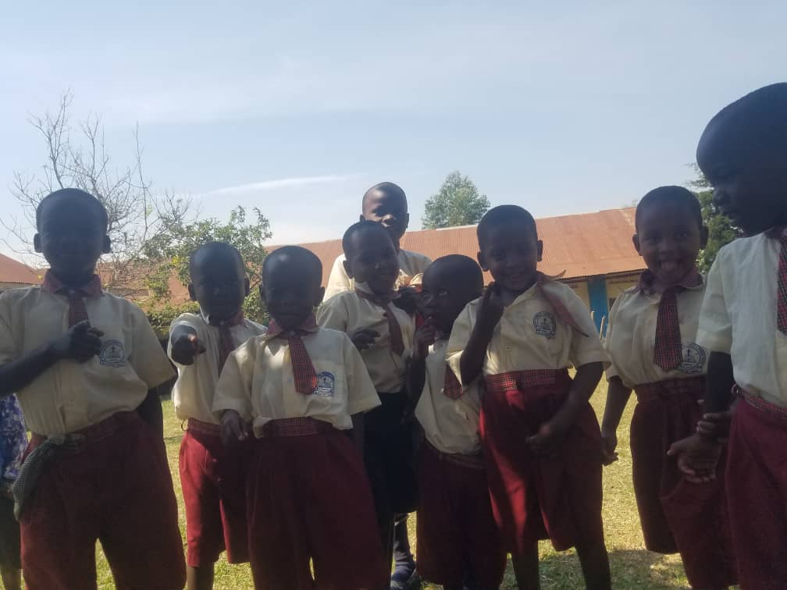

WHAT WE DO
The Education Centre was established in 1999 as St. Henry's High School Kaboyo, but we have established a kindergarten and Primary school for elementary education
Hilltop Foundation Nursery and Primary School Kaboyo
Hilltop Foundation Nursery and Primary School Kaboyo is intended for
children of ages Between 2 - 12 years old. We intend to encourage
families, communities and external parties to treat all orphans and
other vulnerable children with respect insuring that they are not
treated as helpless victims but as actors in their own rights. They
should be entitled to express their own views, actively participate
in decision making process and be actively involved in matters that
relate to them.
.

St. Henry's High School Kaboyo
The school aims to reduce illiteracy levels among HIV/AIDS OVCs. We
try to provide care, support, canceling and guidance but our
services are limited by inadequate infrastructure, facilities,
resources and finances. These children like other children need
love, guidance, care and support in terms of education, personal
scholastic materials, uniform, breakfast, lunch, hygiene education,
first aid treatment, medicine, transport and upkeep.
.
 View more
View more